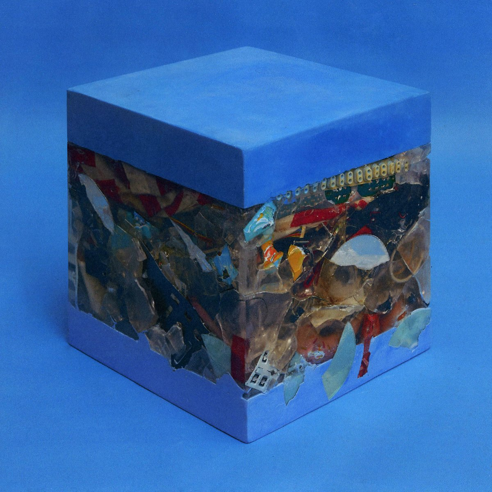
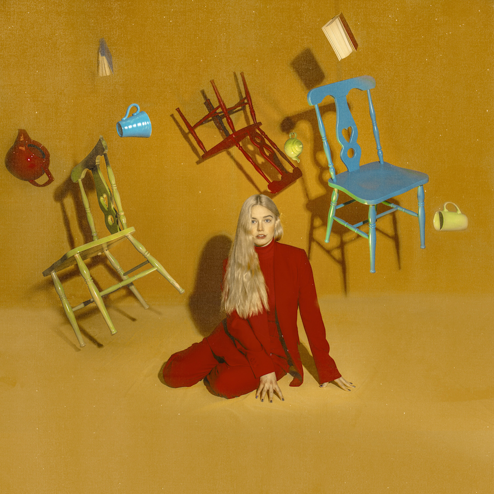

 아티스트 : Crush 피처링 : ZICO 앨범명 : wonderlost wonderlost 장르 : 가요/R&B/소울 재생시간 : 03:38 작사가 : Crush,지코 (ZICO) 작곡가 : Crush,지코 (ZICO),Stay Tuned 편곡자 : Stay Tuned  아티스트 : Ashe 장르 : 팝 / POP 재생시간 : 03:19 발매사 : POVU Collective 기획사 : Mom＋Pop 발매일 : 2020.06.17